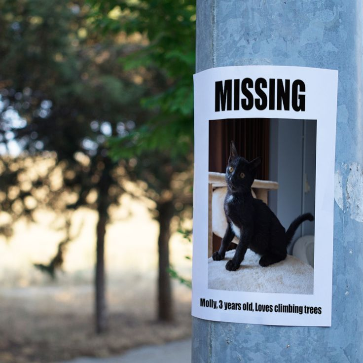

Lost pets and the science of searching
by Laura M. Olivieri Robles
Did you lose your cat? Your pet’s personality may give you insights on their whereabouts.
Researchers tallied the most effective ways and tactics to search for a lost cat and published their findings in the journal Animals last January 2018.
The study was a major milestone for Kat Albrecht, a pet detective pioneer, who collaborated in the study’s design. Back in 1997, when Albrecht, 58, went from law enforcement to pet detection, there were a handful of people working as professional pet detectives and no technical insight on how to search for missing pets.
“We study lost person behavior, why have we not studied lost pet behavior?” Albrecht asked herself. “The data is right there, all you have to do is interview people who lost a dog or a cat and then found it."
Researchers collected data such as the search methods used, location found and distance traveled by lost pets from an online survey in the United States and Australia. Click the images below to read some of the major highlights of the study.
On the science of searching